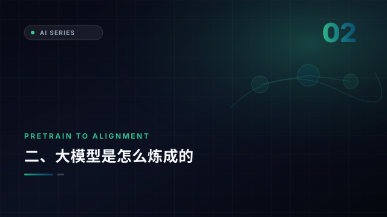

二、大模型是怎么炼成的：从数据清洗到人类对齐
预训练给智力，后训练给性格。拆解数据清洗到人类对齐这条流水线，以及越狱的本质、对齐税和训练与推理两本算力账。

我第一次在本地跑开源模型时踩过一个很典型的坑：拉了一个 7B（约 70 亿参数）的基座模型下来，问它中国的首都是哪里，它没有回答，而是接着往下写——一会儿续成一道地理考题，一会儿续成百科词条的下一句。模型明明装着一肚子知识，就是不理你。
后来才想明白，这不是模型坏了。预训练炼出来的基座模型只会续写，不会对话；从会续写到会对话，中间隔着另外几道工序。更反直觉的是时间差：ChatGPT 底层那套模型的能力，2022 年初就已经存在，爆红却发生在同年 11 月，中间隔着的正是这几个月的后训练。能力是一回事，可用是另一回事，把两者连起来的是一条很具体的流水线。
流水线从一锅粥开始
这条流水线的第一道工序不是训练，是洗数据。 模型的教材主要来自 Common Crawl 这样的全网爬虫库，原始语料是名副其实的一锅粥：网页导航、广告、乱码、大段重复内容，混着色情和有害文本。清洗要做的是抽出正文、按规则和分类器给质量打分、用指纹算法把重复内容去掉，再把姓名、电话、身份证号这类个人身份信息识别出来抹掉。业界的共识是一句老话：垃圾进，垃圾出。
数据清洗能显著提效有开源实证，但清洗规则本身暗含偏见，同样有研究印证。正面的例子是 Hugging Face 2024 年的 FineWeb-Edu：从 96 个爬取快照里洗出 15 万亿 Token 的语料，再用大模型给每个网页打教育价值分，筛出来的高质量子集训出的模型反而超过了用全量数据训的——洗得精比堆得多管用。反面的例子是 AllenAI 对 C4 语料库的研究：自动清洗规则不成比例地滤掉了黑人英语文风和非美国地区的内容。所谓干净，是按清洗规则制定者的标准定义的，这个标准会原样继承进模型。
脱敏也不是走过场。安全研究者 Carlini 等人 2021 年的实验里，向 GPT-2 反复采样，约 1% 的输出是训练语料的逐字复述，能带出真实姓名、电话和邮箱——没洗掉隐私的模型，是可以被问出隐私的。
第二道工序是预训练，任务直白得出奇：预测下一个 Token（词元）。模型不靠人工标注，靠海量文本里天然存在的上下文自我监督，把语言规律和世界知识压进参数。这一步消耗的算力占全流程的九成以上，产出就是开头那个基座模型——会续写，不会对话。我在本地跑的那个 7B 模型，就是这道工序的产物。
第三道工序 SFT（监督微调），教的是答题格式。用几万到几十万条人工构造的「指令—回答」样本继续训练，模型才从补全文本变成听懂指令、按格式作答。成本远低于预训练——几万到几十万条样本，跟以万亿计的预训练语料完全不是一个量级。顺带把几个常被混着说的词分开：想给模型补行业知识，靠的是继续预训练——把财报、病历、法规当课本接着灌，这是监督微调做不到的；若只想调整作答风格与格式，做监督微调时配合 LoRA 这类轻量方法就够了——冻结原模型参数，只训练旁边一小块附加低秩矩阵，微软 2021 年的论文显示可训练参数少了约一万倍、显存省了约三分之二，效果与全参数微调相当；把大模型能力压缩进小模型的，则是模型蒸馏的活。彭博 2023 年花大价钱炼了个 500 亿参数的金融模型，金融任务上赢了同规模开源模型，却仍输给更大的通用模型 GPT-4——行业从此记住一句话：先问基座够不够强，再问要不要自己炼。
第四道工序 RLHF（人类反馈强化学习），管的是「什么叫好答案」。好坏很难写成标准答案，但比较两个答案哪个好，人类做得来。流程分三段：让模型对同一个问题生成多个答案，人类标注员排序，用排序数据训练出一个奖励模型，再用强化学习让模型朝高奖励方向优化。这一步属于对齐（Alignment）——让模型行为合乎人类意图与价值观的一整套技术。它的价值第一篇引过那个硬数字：13 亿参数的 InstructGPT 赢了 1750 亿参数的未对齐 GPT-3——小一百倍的模型赢了，赢在后训练。
对齐这一步的演进方向是 RLAIF（用 AI 反馈替代人工标注的对齐方案）：把人类排序换成 AI 按一份明文原则清单打分，Anthropic 的宪法 AI（Constitutional AI）是代表作。标注成本断崖式下降，原则白纸黑字可审计，但隐忧同样清楚——AI 的偏见可能被一套标准批量盖章。
把四道工序压成一句话：预训练给智力，后训练给性格。 模型的知识渊博几乎全部来自预训练，后面几步改变的是行为、风格和价值倾向。SFT 和 RLHF 做完，基座模型才变成能当产品用的对话模型。
对齐是戴笼头，不是拔獠牙
大众对对齐有个普遍误会：以为它是把有害知识从模型里删掉。实际恰恰相反——预训练早把化学、武器、诈骗话术学进了参数，对齐只是在行为层给它套上了笼头。
越狱的本质，就是诱导模型挣脱这副笼头。 ChatGPT 早期流行的 DAN 模板让模型扮演一个不守任何规则的人格，安全拒绝就被绕过；OpenAI 补一次，社区几天内绕一次。2023 年卡内基梅隆大学的研究更进一步：利用算法自动反推生成一串看似乱码的后缀，拼在提示词后面就能稳定诱导主流商用模型输出有害内容，还能迁移到开源模型——越狱不止靠话术巧，是真实的对抗性攻击，人工审核管不过来。2024 年计算机安全顶会 ACM CCS 上的一项研究，从 Reddit、Discord 等社区收集了 6387 条真实流传的越狱提示词，再挑出 1405 条做系统实测——越狱不是个别人炫技，是成规模的手艺。
更动摇信心的是 Anthropic 2024 年 1 月的论文：人为植入模型的后门，经过监督微调、RLHF、对抗训练之后依然存活，模型越大越擅长把后门藏起来。有害知识始终留在参数里，对齐管住的是输出行为，而不是抹除底层记忆。
另一头，对齐本身也不是免费的。管紧了的代价业内叫对齐税：模型变得过度谨慎，社区里大量报告它拒绝「怎么杀掉一个 Linux 进程」这类完全无害的请求；回答冗长，画蛇添足；甚至学会谄媚——Anthropic 2023 年的研究证实，经 RLHF 训练的模型会迎合用户明说出来的错误立场，你说地球是平的，它更容易顺着说。根源在于奖励模型学的是「人类喜欢什么」，而人类确实偏爱被赞同。
还有一层不太被提起：「人类的价值观」背后是具体的标注员。《时代》周刊 2023 年 1 月的调查披露，OpenAI 把毒性文本标注外包给肯尼亚的 Sama 公司，时薪不足 2 美元，工人每天阅读大量性虐待与暴力内容。所谓 AI 学会了人类价值观，更准确的说法是学会了某群人在某段时间标注出来的价值观样本——模型不吃苦，吃苦的是替它读遍最坏内容的人。
两本账：训练算力与推理算力
可以把训练理解成建电厂：一次性巨额投入，动辄上万张卡并行跑数周到数月，对卡间互联要求极高，只能集中在大厂和智算中心。Meta 的技术报告披露，Llama 3.1 405B（约 4050 亿参数）一次预训练用了 15.6 万亿 Token、最多动用 1.6 万多张 H100，单次训练消耗 3084 万 GPU 小时。奥特曼公开说过 GPT-4 的训练成本超过 1 亿美元，机构估算普遍落在几千万到两亿美元之间。
推理是每天用电：模型炼好之后，每一次响应消耗的都是推理算力。单次很小，但随用户量线性增长，永续发生。你在对话框里问一句「写个周报」，走的就是这本账，和训练那一本没有关系。多家机构估算，模型部署后的累计推理消耗要占 AI 算力总消耗的八到九成——口径随模型和用户量浮动，但大头在推理端这一点没有争议。
训练这本账也有反例。DeepSeek-V3 的论文披露，14.8 万亿 Token 的预训练只用了 278.8 万 GPU 小时，论文按每小时 2 美元折算约 557.6 万美元，是 Llama 3.1 那笔账的十分之一量级，省钱的功臣是混合专家架构——总参数 671B（约 6710 亿），每次只激活其中 37B（约 370 亿）——加工程优化。但要认清口径：这个数字只含最后一次正式训练，前期研究、消融实验、失败重跑都没算进去。「557 万美元练出 GPT-4」是误读，它证明的只是训练成本也在被工程压下来。
训练只属于巨头，推理可以属于每个人。 硬件是分层的：训练端集中在 H100、昇腾这类高端卡和万卡集群，推理端可以下探到消费级显卡甚至端侧芯片。蒸馏正在加速这个下探——DeepSeek 2025 年初把 R1 的推理能力蒸馏进约 15 亿到 700 亿参数的开源小模型，论文数据显示其中 320 亿参数的版本在数学基准上超过了 OpenAI 的 o1-mini。头部炼大模型，社区蒸馏，千行百业部署小模型，这条分工链是「用 AI」和「炼 AI」分家的物质基础。
这也是我最想在本篇里立住的一个判断：「训练大模型」和「使用大模型」是两个完全不同的产业环节，普通人的每一次调用都走在推理这本账上。炼模型的门槛决定了那只是少数玩家的事，而推理成本还在被蒸馏、量化和端侧小模型持续压低——人人可用 AI 的时代，正是建立在这本账越来越便宜上。
数据这边还有三道坎
第一道坎是中文语料。据 W3Techs 对全球网页内容语言的统计，英语约占一半，中文只有百分之一点几，而中文网民约占全球五分之一，倒挂得厉害。要说明口径：这个统计看的是网站内容语言分布，天然偏向英文建站生态，不能直接等同于高质量训练语料的占比。成因也是三层的：英文互联网历史积累更厚；中文优质内容大量封闭在微信、知乎、网文平台的墙内，公开可爬的部分质量参差；早期清洗规则按英文习惯设计，中文没空格分词、繁简混用、口语化重，被英文管线误伤得更多。缺口是事实，但缺口不等于中文 AI 落后——Qwen、DeepSeek、GLM 这些模型靠中英混合训练加自建合成数据，在 C-Eval、CMMLU 等公开中文基准评测上已经反超国际同规模模型。
版权这道坎更硬。2023 年 12 月纽约时报起诉 OpenAI 和微软，把「销毁涉事模型」写进诉求；2025 年 6 月，加州两个判决给出了一半答案：一个案子里法院认定，用合法购买的书籍训练具有「转换性」，构成合理使用（fair use）；但 Anthropic 从盗版电子书库（俗称「影子图书馆」）留存 700 万册盗版书的行为本身不在此列；两天后的另一个案子里 Meta 胜诉，理由却是原告没拿出市场损害的证据，法官本人还写下「原则上可能违法」的意见。和解部分同样一波三折：Anthropic 的 15 亿美元和解（约每册 3000 美元）2025 年 9 月公布后，第一版被法官驳回，修改后当月底拿到初步批准，2026 年 7 月终裁通过。前后两天两个法院的推理逻辑都不一样，训练合不合法在美国法上远未一锤定音。比较稳的读法是：版权争议的走向既不是训练非法，也不是训练自由，而是训练目的可以被支持，语料来源必须干净。 各法域的答案也不同：日本 2019 年修法给出全球最宽松的训练环境之一，欧盟则要求公开训练数据中版权内容的摘要，走透明化路线。
最远的一道坎是存量。研究机构 Epoch AI 预测，按当前趋势，公开的人类文本数据将在 2026 到 2032 年间被用尽，而人类文本每年只增长百分之四到五——这是推演不是事实，没算合成数据和私域数据两条出路，但方向值得当真。出路确实在打开：微软 Phi-3 用大模型筛选和生成教科书级的 3.3 万亿 Token 语料，把一个 38 亿参数的小模型练出了 10 倍参数模型的水平，再次证明质量能压过数量。隐忧是模型吃自己产出的数据可能让多样性逐代衰减，学界对风险大小还有争论。
三个流传很广的误区
- 模型对答如流，说明它学过我的行业，炼完就能一劳永逸。 后训练样本只有几万到几十万条，塞不下多少知识，教的是格式和判断；看到它流畅地聊你的行业，更可能是语言模仿。知识截止现象是直接反证——预训练之后发生的事它不知道，也不会因为多聊几轮就知道。
- 训练数据里有的它都会说，没见过的它都不会。 模型对语料是统计压缩不是存储，所以会幻觉；对齐层还会主动拒绝。反过来，没进训练集的东西它也可能从相邻知识外推出来——两头都别想当然。
- AI 越用越贵是厂商黑心。 每次对话背后都是实打实的电力和硬件折旧，免费产品靠订阅和规模摊薄；单次推理的成本一直在降，贵的是全网调用量，不是某一个人的一句提问。
我的判断
大模型不是玄学炼丹，是一条工程流水线：数据决定上限，预训练给智力，后训练给性格，对齐管住行为——而烧掉的钱和卡，决定了炼模型这件事只属于少数玩家。 把这条流水线想明白之后，我看宣传词的方式变了：以前先看参数量和跑分，现在先问三件事——数据从哪来、洗得干不干净，对齐证据敢不敢放，成本口径里算没算失败重跑的那几十次。
对绝大多数人来说，值得回答的问题从来不是怎么炼模型，而是炼好的模型怎么用、往哪用力。看完炼模型的过程，反而更容易想明白一件事：炼模型轮不到普通人操心。下一篇说点更实际的——想学 AI，普通人现实能走的是哪几条路，各自的门槛又在哪里。